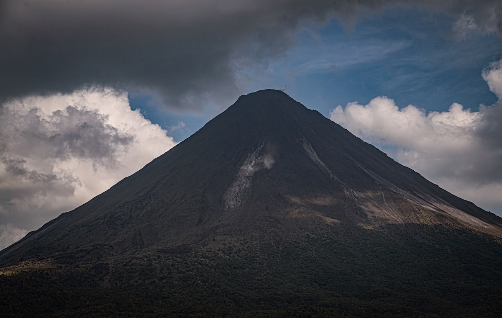
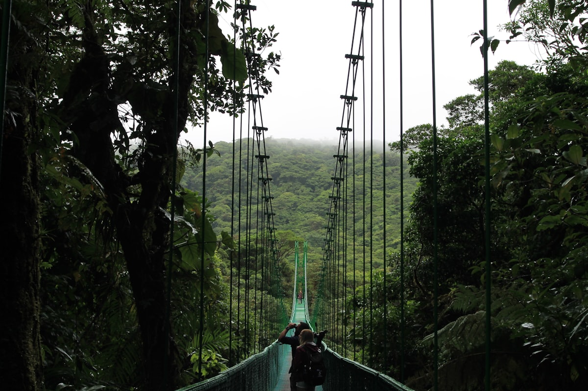
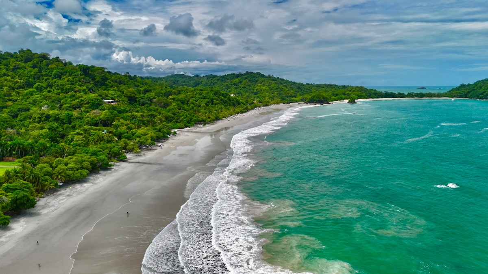
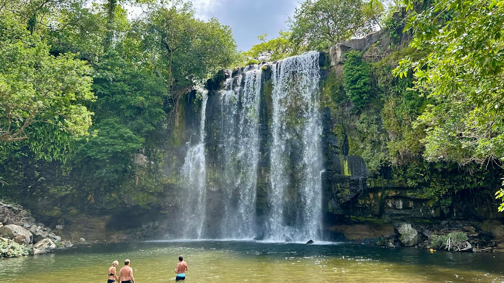
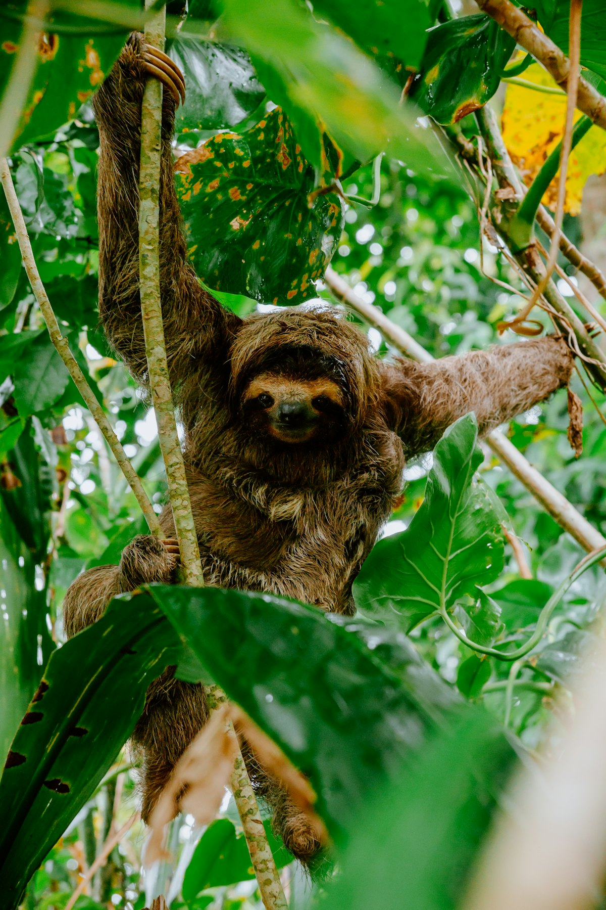
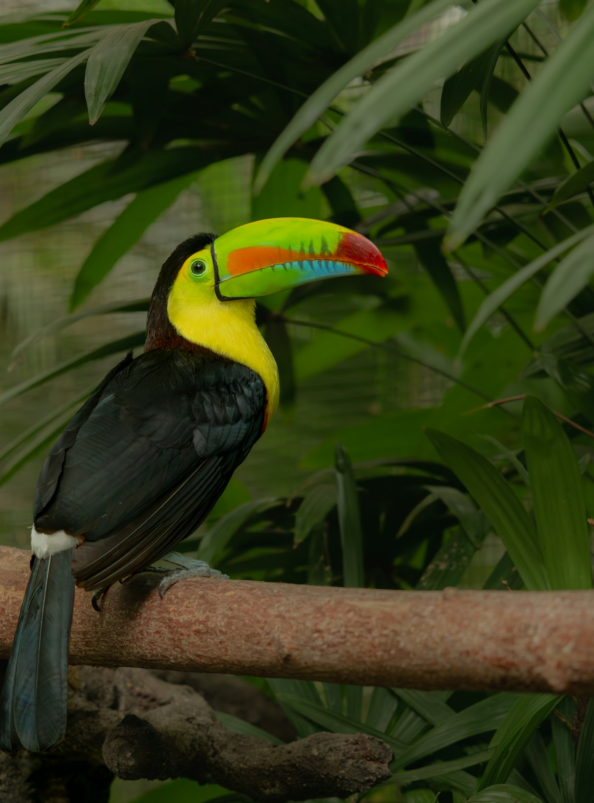
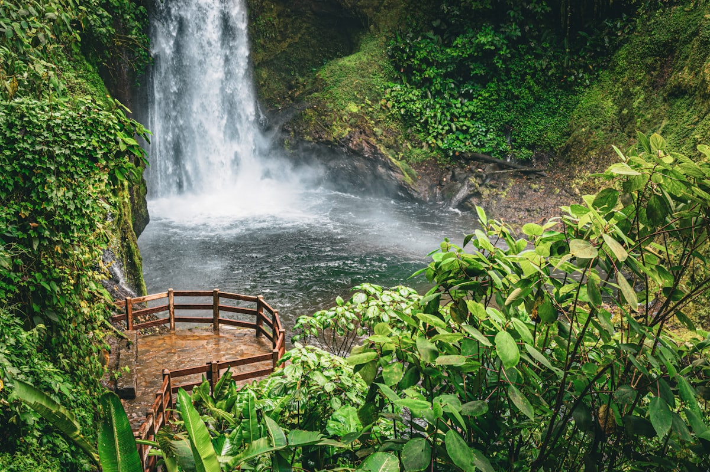
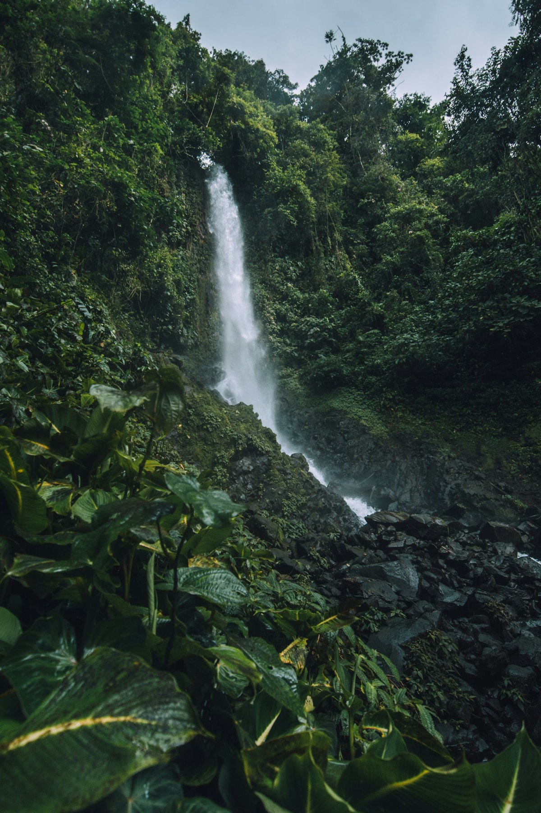

| 事项 | 结论 |
|---|---|
| 事项 | 结论 |
| 签证（最关键） | 中国护照需办哥斯达黎加签证；持有效美国/加拿大/申根签证或居留许可可免签入境 30 天，需返程机票与住宿证明 |
| 时差 | 比北京慢 14 小时 |
| 电源 | 120V，A/B 型插座（两扁脚），需转换头 |
| 货币 | 哥斯达黎加科朗 CRC，1 元 ≈ 71 科朗；美元在旅游区广泛通用 |
| 推荐方案 | 圣何塞 1 天 + 阿雷纳尔 2 天 + 蒙特维多 2 天 + 曼努埃尔安东尼奥 2 天 + 返程 1 天 |
| 行程链 | 北京 → 圣何塞 → 阿雷纳尔 → 蒙特维多 → 曼努埃尔安东尼奥 → 北京 |
| 预算（人均） | 经济 15000–22000 ／ 标准 28000–42000 ／ 舒适 55000–80000（人民币） |
| 三件提前事 | ① 办签或确认美签 ② SINAC 官网订国家公园门票（每日限流）③ 订三段拼车 shuttle |
以下为 8 天 7 晚的推荐节奏：圣何塞中转 1 晚，北上阿雷纳尔住 2 晚泡火山温泉，渡湖到蒙特维多云雾林住 2 晚，最后南下太平洋海岸住 2 晚，返程回圣何塞机场。段间交通靠拼车 shuttle 或租车。
| 日期 | 行程 | 过夜地 | 主题 |
|---|---|---|---|
| D1 抵圣何塞 | 北京✈圣何塞（经洛杉矶/达拉斯转机约 20h+），入住市区，适应 | 圣何塞 | 抵达+适应 |
| D2 | 圣何塞→阿雷纳尔（车程 2.5h）：阿雷纳尔火山国家公园步道 + 傍晚天然温泉 | 阿雷纳尔 | 火山+温泉 |
| D3 | 拉福图纳：瀑布徒步 → 滑索 / 火山湖浆板，阿雷纳尔山景 | 阿雷纳尔 | 冒险日 |
| D4 | 渡阿雷纳尔湖→蒙特维多（约 3h）：云雾林保护区徒步看绿咬鹃 | 蒙特维多 | 转场+云雾林 |
| D5 | 蒙特维多：悬索桥树冠漫步 → 蜂鸟园 → 夜游雨林寻夜行动物 | 蒙特维多 | 树冠+夜游 |
| D6 | 蒙特维多→曼努埃尔安东尼奥（车程 3.5h）：国家公园主步道看树懒猴子 | 曼努埃尔安东尼奥 | 转场+观兽 |
| D7 | 曼努埃尔安东尼奥：公园海滩 + 皮划艇 / 日落帆船出海 | 曼努埃尔安东尼奥 | 海滩+出海 |
| D8 返程 | 克波斯→圣何塞机场（约 2.5h），✈转机回北京 | — | 收尾 |
以下为 8 天全程的逐小时执行时间线，可当作「当天打开照着走」的清单。标注 ※ 的可选项视体力与天气取舍。
| 时间 | 事项 |
|---|---|
| 全天 | 北京✈圣何塞（经洛杉矶/达拉斯/迈阿密转机，总航程约 20h+；美国转机需美签，或选欧洲/墨西哥转机） |
| 抵达 | 胡安·圣玛丽亚国际机场入境，出示签证/免签资格、返程机票与酒店订单，入境需旅行保险（医疗保额至少 5 万美元） |
| 16:00 | 入住圣何塞市区，兑换科朗/确认美元现金 |
| 19:30 | Mercado Central 中央市场晚餐：Gallo Pinto 豆饭 + 鲜榨果汁 |
| 时间 | 事项 |
|---|---|
| 09:00 | 圣何塞出发，拼车/租车前往拉福图纳（La Fortuna，车程 2.5–3h） |
| 12:00 | 入住拉福图纳生态旅馆，午餐 |
| 14:00–16:30 | 阿雷纳尔火山国家公园步道（门票约 15 美元）：1968 年熔岩流徒步，看完美锥形火山 |
| 17:30–20:00 | 天然温泉：塔巴孔/巴尔迪温泉（约 45–80 美元）或免费河滩温泉，泡汤看火山轮廓 |
| 时间 | 事项 |
|---|---|
| 08:00–10:30 | 拉福图纳瀑布（约 18 美元）：500 级台阶下到瀑布深潭，可跳水游泳 |
| 10:30–12:00 | 瀑布脚下花园与小径漫步 |
| 12:00–13:00 | 午餐：Soda 小餐馆 Casado 套餐 |
| 13:30–16:30 | 二选一：滑索 canopy tour（约 60–80 美元）穿火山雨林，或阿雷纳尔湖浆板看火山倒影 |
| 18:00 | 晚餐 + 夜间泡温泉 |
| 时间 | 事项 |
|---|---|
| 08:00 | 拉福图纳出发：经阿雷纳尔湖渡船（约 30min）+ 陆路，全程约 3h 到蒙特维多 |
| 12:00 | 入住蒙特维多木屋旅馆，午餐 |
| 14:00–17:00 | 蒙特维多云雾林生物保护区（约 25 美元）：苔藓覆盖的原始林、云雾与绿咬鹃，徒步 2–3h |
| 18:30 | 晚餐：山间木屋烛光餐 |
| 时间 | 事项 |
|---|---|
| 08:00–10:30 | 悬索桥树冠漫步（塞尔瓦图拉/天空步道，约 25–40 美元）：数座吊桥穿行树冠层 |
| 10:30–12:00 | 蜂鸟园：14 种蜂鸟在喂食器旁打转，快门声不停 |
| 12:00–13:00 | 午餐 |
| 14:30–17:00 | 自由补充：蝴蝶园 / 滑索 / 圣埃琳娜保护区（人更少） |
| 18:30–20:30 | 夜游雨林（约 30–40 美元）：手电筒找树懒、青蛙与夜行昆虫 |
| 时间 | 事项 |
|---|---|
| 08:00 | 蒙特维多出发，拼车南下曼努埃尔安东尼奥（车程约 3.5h） |
| 11:30 | 入住克波斯/公园门口，午餐 |
| 13:30–17:00 | 曼努埃尔安东尼奥国家公园主步道（门票 18 美元，官网提前订）：白面卷尾猴、双趾树懒、巨嘴鸟与四片海滩 |
| 18:30 | 克波斯海港晚餐：海鲜 Ceviche + 日落 |
| 时间 | 事项 |
|---|---|
| 08:00–10:30 | 公园内主海滩浮潜/游泳（若 D6 没走主步道则补公园徒步） |
| 10:30–12:00 | 皮划艇穿红树林（约 40–60 美元）：鳄鱼、苍鹭、翠鸟 |
| 12:00–13:30 | 午餐：克波斯海鲜市场 |
| 14:30–17:30 | 二选一：日落帆船出海（约 70–90 美元，含浮潜与玛格丽特酒）或海滩躺平 |
| 19:00 | 告别晚餐 |
| 时间 | 事项 |
|---|---|
| 08:00–10:30 | 退房，拼车返回圣何塞（约 2.5h），沿途可停咖啡庄园买豆 |
| 11:00–12:30 | 圣何塞机场值机，买哥斯达黎加咖啡与巧克力伴手礼 |
| 14:00 | 胡安·圣玛丽亚机场起飞，转机回北京 |
| 落地 | 到家休息，倒 2 天时差 |
必去（必去）/ 顺路（顺路）/ 可跳过（可跳过）。

必去
必去
必去
必去
顺路
顺路
必去图片为 Unsplash 主题图（阿雷纳尔火山、蒙特维多悬索桥、云雾森林、树懒、巨嘴鸟、瀑布与海滩等均为哥斯达黎加实景），用于页面配图。更多免费景点：中央市场、蜂鸟园、蝴蝶园、圣埃琳娜保护区。
点击左侧节点可在地图上定位；点击地图 marker 会高亮对应节点。坐标为 WGS-84 转 GCJ-02 纠偏后标注。
以下为单人、不含购物的估算，人民币计价；出发地基准北京。汇率按 1 元 ≈ 71 哥斯达黎加科朗估算。哥斯达黎加是美洲「生态旅游贵国」，住宿与活动费用高，美签转机线路与国内订票能省 20%。
| 项目 | 经济（15000–22000） | 标准（28000–42000） | 舒适（55000–80000） |
|---|---|---|---|
| 往返机票 | 转机往返 8000–9500 | 含美签转机 10000–13000 | 商务/直挂 18000–26000 |
| 住宿（7 晚） | 青旅 150–250/晚 | 生态旅馆 500–1000/晚 | 度假村/观景 1500–3000/晚 |
| 交通 | 拼车+公交 1500–2500 | 租车 4WD 3000–5000 | 包车/专车 8000–15000 |
| 门票活动 | 基础公园 500–1000 | 含温泉/滑索 2500–4500 | 全含+向导 7000–10000 |
| 餐饮（8 天） | 市场+Soda 1600–2500 | 正常下馆子 3000–5000 | Fine Dining 8000–12000 |
把曼努埃尔安东尼奥换成加勒比侧：托图格罗国家公园（7–10 月海龟产卵季）、卡维塔与普埃尔托维耶霍的非洲裔加勒比文化。两条海岸气质完全不同，太平洋侧成熟、加勒比侧原生态，适合二次造访的旅行者。
太平洋侧延伸：从克波斯南下到乌维塔/奥萨半岛（德雷克湾、科尔科瓦多国家公园），旱季 12–4 月看鲸与海豚，是资深生态旅行者的深度选项，但路况差、需要更多时间与预算。
| 方式 | 时长 | 参考价 | 备注 |
|---|---|---|---|
| 转机（唯一方式） | 北京→圣何塞 20–28h | 往返 8000–11000 元 | 经洛杉矶/达拉斯/迈阿密（需美签）或墨西哥城/欧洲转机 |
| 直飞 | — | — | 中国无直飞哥斯达黎加航班 |
| 租车 | — | 4WD 约 60–90 美元/天 | 山路多建议 SUV/4WD，用 Waze 导航，买全险 |
| 区域 | 价格/晚 | 优点 | 短板 |
|---|---|---|---|
| 圣何塞·市区 | 经济 200–350 / 标准 400–700 | 转机枢纽、中央市场近 | 城市感一般 |
| 拉福图纳（阿雷纳尔） | 生态旅馆 400–900 | 火山景观、温泉步行 | 旺季一房难求 |
| 蒙特维多·山间 | 木屋 300–700 | 云雾林里的木屋 | 山路湿冷、蚊虫多 |
| 克波斯/曼努埃尔安东尼奥 | 海滨 400–1000 | 海滩+雨林同区 | 旺季提前 2 周订 |
| 圣何塞机场区 | 经济 300–500 | 返程方便 | 无景点 |